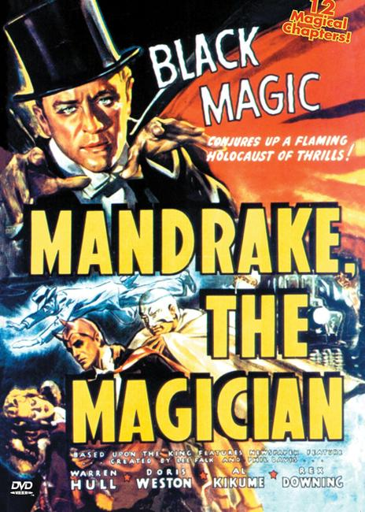
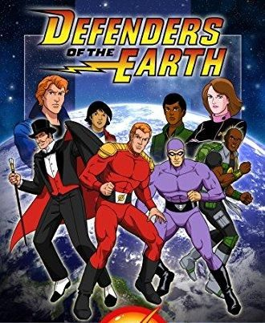

Mandrake the Magician is a syndicated newspaper comic strip, created by Lee Falk (before he created The Phantom). Mandrake began publication on June 11, 1934. Phil Davis soon took over as the strip's illustrator, while Falk continued to script. The strip is distributed by King Features Syndicate.
Mandrake, along with the Phantom Magician in Mel Graff's The Adventures of Patsy, are regarded by comics historians as the first superheroes of comics. Comics historian Don Markstein writes, "Some people say Mandrake the Magician, who started in 1934, was comics' first superhero."
Davis worked on the strip until his death in 1964, when Falk recruited current artist Fred Fredericks. With Falk's death in 1999, Fredericks became both writer and artist. The Sunday Mandrake strip ended December 29, 2002. The daily strip ended mid-story on July 6, 2013 when Fred Fredericks retired, and a reprint of D220 "Pursuit of the Cobra" from 1995 began on July 8, 2013.
Mandrake is a magician whose work is based on an unusually fast hypnotic technique. As noted in captions, when Mandrake "gestures hypnotically", his subjects see illusions, and Mandrake has used this technique against a variety of villains including gangsters, mad scientists, extraterrestrials, and characters from other dimensions. At various times in the comic strip, Mandrake has also demonstrated other powers, including turning invisible, shapeshifting, levitation, and teleportation.
His hat, cloak and wand, passed down from his father Theron, possess great magical properties which in time Mandrake learns how to use. Although Mandrake publicly works as a stage magician, he spends much of his time fighting criminals and combatting supernatural entities. Mandrake lives in Xanadu, a high-tech mansion atop a mountain in New York State. Xanadu's features include closed circuit TV; a sectional road which divides in half; and vertical iron gates.

In 1939, Columbia produced a 12-part Mandrake the Magician serial, based on the King Features strip, starring Warren Hull as Mandrake and Al Kikume as Lothar.
On radio Mandrake the Magician was a 15-minute radio serial aired on the Mutual Broadcasting System from November 11, 1940, until February 6, 1942.

In the animated series Defenders of the Earth (1986–87), Mandrake the Magician teams with fellow King Features adventurers Flash Gordon and The Phantom. Mandrake's best friend and crime fighting partner Lothar also has a prominent role.